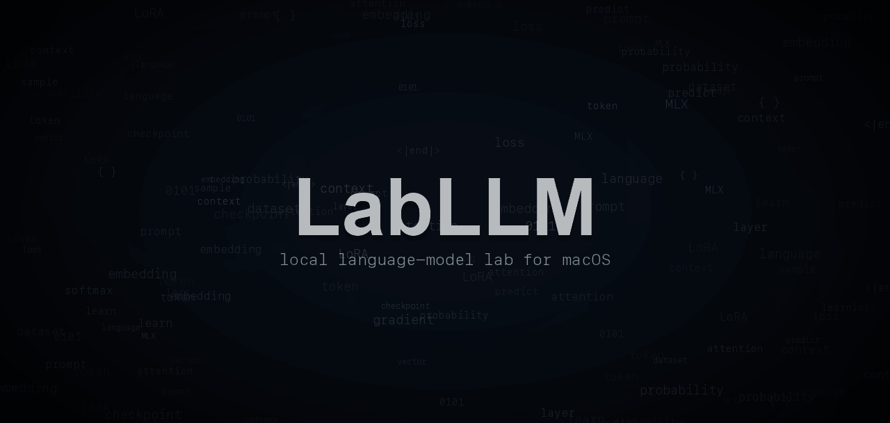
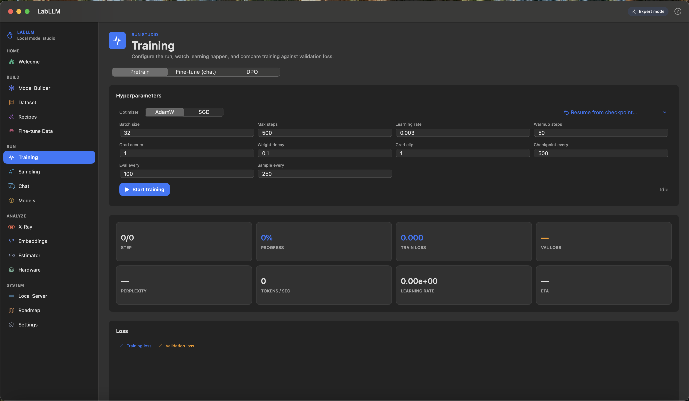
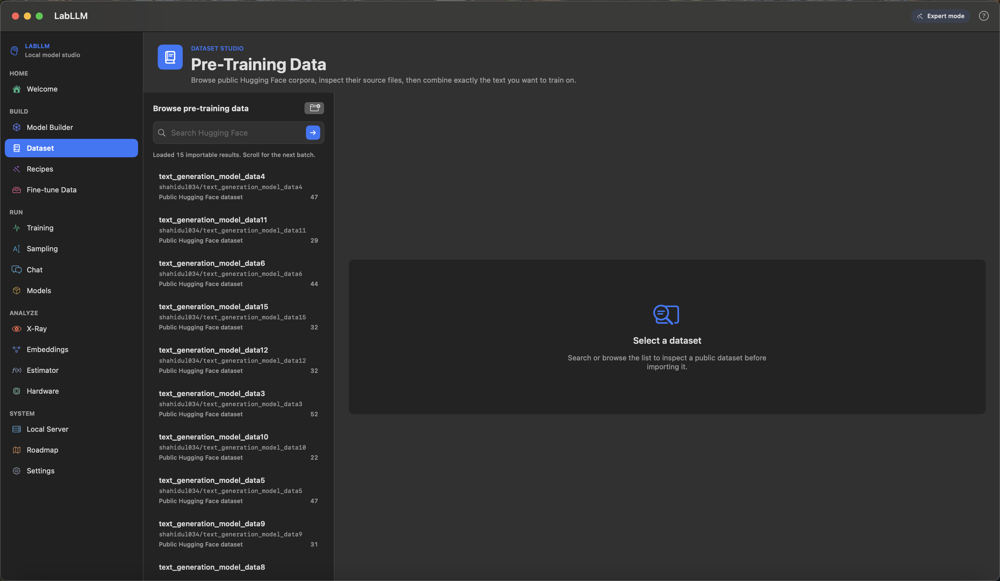
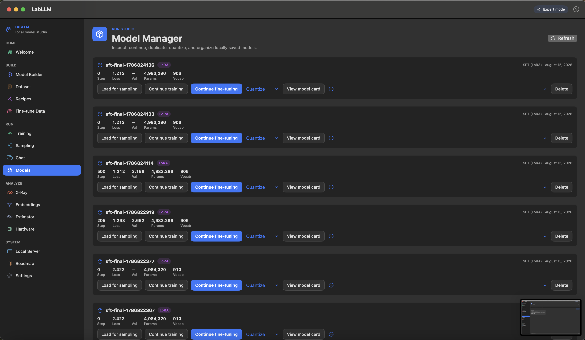

Bring data
Browse Hugging Face datasets, import local text or JSONL, mix sources, and track progress on big downloads.
SwiftUI / Apple MLX / real training loop
LabLLM is a native macOS GUI for training small Transformer models from scratch, fine-tuning behavior, inspecting checkpoints, and chatting with the model you trained.



The whole experiment loop
Browse Hugging Face datasets, import local text or JSONL, mix sources, and track progress on big downloads.
Choose a GPT-style preset, tune architecture details, estimate memory, and let Simple mode handle the tokenizer.
Follow train loss, validation loss, throughput, checkpoints, ETA, and live samples as the model changes.
Generate inline, chat with checkpoints, continue useful runs, export cards, and keep experiments organized.
Product, not promise
Training should not feel like staring at a terminal and hoping the curve means something. LabLLM keeps metrics, validation, samples, checkpoints, and model management close together.

Tiny live-feeling previews
The model opened its eyes and noticed
val loss improved, sample quality up, ready to continue or chat.
Explain why validation loss matters.
Screens from the app

Search, inspect dataset cards, import actual trainable files, and mix sources with row limits or percentages.

Load, continue, rename, quantize, and compare checkpoints without losing the thread of the experiment.
Roadmap tracker
LabLLM has a lot of surface area, so the roadmap separates working beta features from active correctness work and bigger future ideas.
Open ROADMAP.mdPull requests welcome
The highest-impact work is focused: tests, ML correctness, dataset edge cases, SwiftUI polish, docs, screenshots, recipes, and better explanations for errors.
Quick answers
Yes. LabLLM builds GPT-style decoder models with Apple MLX and saves checkpoints you can load back into the app.
Yes, with good instruction or conversation data, you can fine-tune behavior and chat with the result inside LabLLM.
macOS 14 or newer on Apple Silicon. More memory gives you more room for larger experiments.
Core correctness tests, dataset import reliability, tutorial polish, and focused SwiftUI fixes are the best entry points.
Open source beta